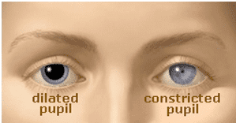
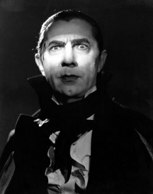

< < < Back
How To Present A Strong And Masculine Face – Return Of Kings
You don’t need me to tell you how important communication is every single day of your life. Those who are capable of communicating succinctly and schmoozing effectively are generally the people who are capable of succeeding in their respective fields, while those who cannot communicate effectively are going to, at best, be busy little bees that make a decent (but not great) living wage technically and skillfully serving those skilled communicators.
Knowing that, you should also bear in mind that day to day communication can roughly be split 50-50 between verbal language and body language cues. And seeing as body language by definition involves alignment and proprioception of the human body, that is something I am qualified to talk about.
The movements of your body can reveal how you feel about yourself and others, and what you’re planning on doing. A person who understands body language holds all the advantages in interpersonal communication. Most importantly, they can convey the message and image of yourself that you want to convey to others, and on some occasions force you to take on a certain mood.
There’s enough to write an entire book just on body language (and in fact, many people have), but of course, seeing as you are a man, you undoubtedly want to create body language that is strong and masculine and dominant, and to avoid the submissive and shrinking body language that you’re probably doing.
The first thing to remember with body language is that no one gesture, pose, or facial expression alone conveys a message. It has to be taken in context with all the other body parts. Practice them in the mirror slowly and with control, so you can speed them up when you need to use them in interpersonal communication.
Since we want to establish dominance 24/7, this article will be the first of several looking at each region of the body and analyzing how you can present strong body language for it.
The Head
The position of your head is very important to conveying emotion. It can reveal attitudes that replace the spoken word, and support or challenge what your mouth is saying. You likely know this already (indeed, you intuitively have a basic grasp of body language).
If you tilt your head a bit backward (think of the expression “nose in the air”) it seems arrogant. If you thrust your chin forward, it looks pugnacious. When your name is announced in praise, you naturally lift your head up. When you want people to pay attention to you, your head rises. So if you want to look strong, you want to avoid having a downward chin and a drooping head, while at the same time avoiding the upward nose and thrust outward jaw of the arrogant man.
A steady, level head looks assertive and strong without being snobbish and “try-hard”. Avoid turning your head (in other words, maintain eye contact) and looking towards the shoulder, since that has been shown to be a sign of somebody FAKING strength and confidence. The key is to maintain eye contact, levelness, and symmetry to portray that sort of “cool confidence”.
Essentially, you want to do the exact opposite of this
The Face
Probably the most important part of body language, the face must be focused upon, particularly the eyes and the lips. “Look into a man’s eyes, he cannot hide in there”, and all that.
As a side note, looking at the face is also a pretty reliable way to know if a woman is attracted to you, but for now we want to deal with masculine body language, and how the various orifices of the face can affect it.
Eye contact is usually good, but sometimes it’s uncomfortable when the other person is dishonest or angry. The comfort of the eye contact depends on how they look or don’t look at you. Keep that in mind should you need to make somebody uncomfortable. Realize that “interest” eye contact has nice big dilated pupils, and “angry” eye contact has dilated pupils. You cannot control this (unless you’re a 16th century hooker with belladonna in an eye dropper), so just bear that in mind.

Also bear in mind that in some countries, prolonged eye contact is seen as rude. As a rule of thumb, whenever you are speaking to them, or they are speaking to you, maintain eye contact. When they look away at something, you do the same.
Eye contact can of course be used to show dominance. Dominant eye movements are sustained, slow, and smooth. Those in control of the interaction demonstrate their dominance by choosing when and how to look at the audience, and the easiest way to be perceived as strong and dominant is to slightly narrow the eyes and give a long, sustained gaze.
Paradoxically, removing eye contact in controlled bouts can really reinforce dominance. Example: if reprimanding someone, take your eye contact away for a little bit, to get their anxiety levels up, and then give them the stare. Looking away from someone, combined with a strong voice and posture, gives the idea of “You’re not worthy of me.” And of course, if you really want to unnerve somebody, just stare into their soul, directly into the eye without flinching.

Lips
The masculine man does not give a smile away constantly like a goof. He keeps a stone face throughout most of his day. The eyes are neutrally open or semi-squinted and the mouth is a straight line.
I am NOT saying that you should constantly be dour and unhappy. By all means, be ebullient on the inside, just don’t LOOK constantly happy. A smile is worth more if it’s given sparingly instead of given to everyone.
Two types of smile. On the left a real smile that crinkles the eye, on the right a fake smile that is merely a movement of the mouth
Conclusion
In general, the idea you want to be reaching for is to not be too “open” with your facial expression”, stay tight and in control, but not too tight as that shows anger or the restraint of anger. Should you feel the need to smile, realize that a real smile crinkles the eyes, whereas a fake smile doesn’t. Use your smiles sparingly, and give an earnest one when it’s necessary to do so. That makes you much more endearing than being a typical fake-smiling corporate douchebag.
Sound complicated? It is a bit, the only way to learn it is from practicing in the mirror, and making a conscious effort to observe it in your daily dealings. But once you’ve mastered facial body language, the actual body can be undertaken.
Read More: The Strong & Independent Woman Translator